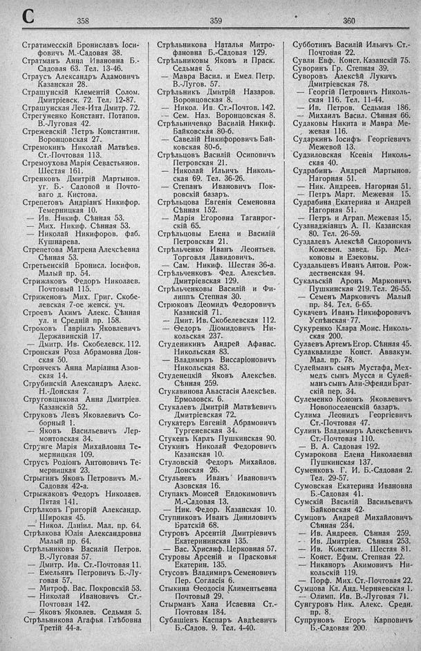

Лист источника 470
Скан

Распознанный текст
С 358
Стратимесскій Брониславъ Іоси-
фовичъ М.-Садовая 38.
Стратманъ Анна Ивановна Б.-
Садовая 63. Тел. 13-46.
Страусъ Александръ Адамовичъ
Казанская 28.
Страшунскій Клементій Солом.
Дмитріевск. 72. Тел. 12-87.
Страшунская Лея-Ита Дмитр. 72.
Стрегуненко Констант. Потапов.
В.-Луговая 42.
Стрежевскій Петръ Константин.
Воронцовская 27.
Стремокинъ Николай Матвѣев.
Ст.-Почтовая 113.
Стремоухова Марія Севастьянов.
Шестая 161.
Стренковъ Дмитрій Мартынов.
уг. Б.- Садовой и Почто-
ваго д. Кистова.
Стрепетовъ Андріанъ Никифор.
Темерницкая 10.
— Ив. Никиф. Сѣнная 53.
— Мих. Никиф. Сѣнная 53.
— Николай Никифоров. фаб.
Кушнарева.
Стрепетова Матрена Алексѣевна
Сѣнная 53.
Стретьенскій Бронисл. Іосифов.
Малый пр. 54.
Стрижаковъ Федоръ Николаев.
Почтовый 115.
Стриженовъ Мих. Григ. Скобе-
левская 7-ое женск. уч.
Строевъ Акимъ Алекс. Сѣнная
ул. и Средній пр. 158.
Строковъ Гавріилъ Яковлевичъ
Державинскій 17.
— Дмитр. Ив. Скобелевск. 112.
Стронская Роза Абрамовна Дон-
ская 50.
Стрончекъ Анна Маріанна Азов-
ская 14.
Струбинскій Александръ Алекс.
Н.-Донская 7.
Струговщикова Анна Дмитріев.
Казанскій 52.
Струковъ Левъ Яковлевичъ Со-
борный 1.
— Яковъ Васильевичъ Лер-
монтовская 34.
Струнге Марія Михайловна Те-
мерницкая 109.
Струсъ Родіонъ Антоновичъ Те-
мерницкая 23.
Стрыгинъ Яковъ Петровичъ М.-
Садовая 42-а.
Стрыжаковъ Федоръ Николаев.
Пятая 141.
Стрѣлковъ Григорій Александр.
Широкая 45.
— Никол. Даніил. Мал. пр. 64.
Стрѣлкова Юлія Александровна
Малый пр. 64.
Стрѣльниковъ Василій Петров.
В.-Луговая 57.
— Дмитр. Ив. Ст.-Почтовая 11.
— Емельянъ Петровичъ Б.-Лу-
говая 57.
— Митроф. Вас. Покровскій 53.
— Николай Ивановичъ Ст.-
Почтовая 142.
— Яковъ Яковлев. Седьмая 5.
Стрѣльникова Агафья Глѣбовна
Третій 44-а.
359
Стрѣльникова Наталья Митро-
фановна Б.-Садовая 129.
Стрѣльниковы Яковъ и Праск.
Седьмая 5.
— Мавра Васил. и Емел. Петр.
В.-Лугов. 57.
Стрѣльникъ Дмитрій Назаров.
Воронцовская 8.
— Никол. Ив. Ст.-Почтов. 142.
— Сем. Наз. Воронцовская 8.
Стрѣльниченко Василій Никиф.
Байковская 80-б.
— Савелій Никифоровичъ Бай-
ковская 80-б.
Стрѣльцовъ Василій Осиповичъ
Петровская 21.
— Николай Ильичъ Николь-
ская 69. Тел. 36-26.
— Степанъ Ивановичъ Пок-
ровскій базаръ.
Стрѣльцова Евгенія Семеновна
Сѣнная 152.
— Марія Егоровна Таганрог-
скій 65.
Стрѣльцовы Елена и Василій
Петровская 21.
Стрѣльченко Иванъ Леонтьев.
Торговля Давидовичъ.
— Сам. Никиф. Шестая 36-а.
Стрѣльченковъ Фед. Алексѣев.
Дмитріевская 129.
Стрѣльченовы Василій и Фи-
липпъ Степная 30.
Стрюковъ Деомидъ Федоровичъ
Казанскій 71.
— Дмит. Ив. Скобелевская 112.
— Ѳедоръ Діомидовичъ Ни-
кольская 237.
Студеникинъ Андрей Афанас.
Никольская 83.
— Владимиръ Виссаріоновичъ
Никольская 83.
Студенецкій Яковъ Алексѣев.
Сѣнная 259.
Стукавинова Анастасія Алексѣев.
Ермоловск. 6.
Стукалевъ Дмитрій Матвѣевичъ
Дмитріевская 72.
Стукатеръ Евгеній Абрамовичъ
Тургеневская 34.
Стукенъ Карлъ Пушкинская 90.
Стукинъ Николай Федоровичъ
Казанская 10.
Стуловскій Федоръ Михайлов.
Донская 26.
Стульневъ Иванъ Ивановичъ
Азовская 16.
Ступакъ Моисей Евдокимовичъ
М.-Садовая 13.
— Ник. Федор. Казанская 10.
Ступниковъ Иванъ Диниловичъ
Братскій 68.
Стуровъ Арсентій Дмитріевичъ
Екатерининская 135.
— Вас. Хрисанф. Церковная 57.
Стуровы Арсеній и Прасковья
Екатерин. 135.
Стусовъ Владимиръ Семеновичъ
Пер. Согласія 6.
Стыкина Ѳеодосія Климентьевна
Почтовый 29.
Стырманъ Хана Исаевна Ст.-
Почтовая 184.
Субашіевъ Каспаръ Авдѣевичъ
Б.-Садов. 9. Тел. 4-40.
360
Субботинъ Василій Ильичъ Ст.-
Почтовая 22.
Сувли Евф. Конст. Казанскій 75.
Суворинъ Гр. Степная 39.
Суворовъ Алексѣй Лукичъ
Дмитріевская 78.
— Георгій Петровичъ Николь-
ская 116. Тел. 11-44.
— Ив. Петров. Седьмая 186.
— Михаилъ Васил. Сѣнная 66.
Судаковы Никита и Мавра Ме-
жевая 116.
Сударкинъ Іосифъ Георгіевичъ
Межевой 13.
Судзиловская Ксенія Николь-
ская 40.
Судрабинъ Андрей Мартынов.
Нагорная 51.
— Ник. Андреев. Нагорная 51.
— Петръ Март. Межевая 15.
Судрабина Екатерина и Андрей
Нагорная 51.
— Петръ и Аграп. Межевая 15.
Сузанаджіанцъ А. П. Казанская
80. Тел. 26-59.
Суздалевъ Алексѣй Сидоровичъ
Кожевен. завед. Бр. Мел-
коновы и Езековы.
Суздальцевъ Иванъ Антон. Рож-
дественская 94.
Сукальскій Аронъ Марковичъ
Пушкинская 219. Тел. 26-55.
— Семенъ Марковичъ Малый
пр. 84. Тел. 6-65.
Сукачевъ Иванъ Никифоровичъ
Успѣнская 77.
Сукуренко Клара Моис. Николь-
ская 200.
Сулаевъ Артемъ Егор. Сѣнная 45.
Сулаквалидзе Конст. Аввакум.
Мал. пр. 78.
Сулейманъ сынъ Мустафа, Мех-
медъ сынъ Мусса и Сулей-
манъ сынъ Али-Эфенди Брат-
скій пер. 34.
Сулеменко Кононъ Яковлевичъ
Новопоселенскій базаръ.
Сулима Леонидъ Георгіевичъ
Ст.-Почтовая 47.
Сулинъ Владимиръ Алексѣевичъ
Ст.-Почтовая 110.
— В. А. Садовая 192.
Сумарокова Елена Николаевна
Пушкинская 137.
Суменковъ Г. И. Б.-Садовая 2.
Тел. 29-57.
Сумовская Екатерина Ивановна
Б.-Садовая 41.
Сумскій Василій Васильевичъ
Байковская 42.
Сумцовъ Андрей Михайловичъ
Сѣнная 234.
— Ив. Андреев. Сѣнная 259.
— Ив. Дмитріев. Сѣнная 253.
— Ив. Констант. Шестая 81.
— Конст. Ефим. Степная 22.
— Никаноръ Акимовичъ Ни-
кольскій 119.
— Порф. Мих. Ст.-Почтовая 22.
Сумцова Кл. Анд. Черняевская 1.
— Олимп. Ив. В.-Луговая 71.
Сунгуровъ Ник. Алекс. Средн.
пр. 8.
Супруновъ Егоръ Карповичъ
Б.-Садовая 200.